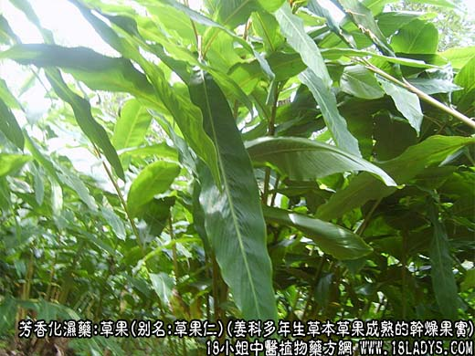
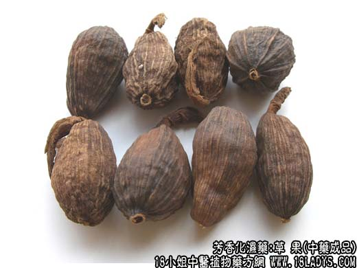
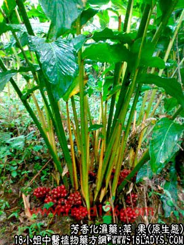

别名：草果仁、草果子
来源：为姜科多年生草本植物草果成熟的干燥果实，野生或栽培。
产地：主产于云南省文山自治州，广西南宁、百色地区，贵州省罗甸。
性状鉴别：为长圆形或长钝角三棱形，长3～4厘米，直径1.5～2.5厘米。外皮棕褐色，有多数突起的纵棱河相对形成的纵沟纹。顶端有一圆形突起小凹脐系宿萼残基。底部常带有短果柄。果皮革质韧性，易纵向剥开。剥开果皮，可见种子多数集结成团，由隔膜分成三瓣，每瓣有种子10～20枚。种子为不规则的多面多角形，棕色，外披灰白色薄膜。在棱角聚合的尖端有一小凹脐，相对的底面有一小凹沟或凹穴。质坚硬。破开后见百色种仁。气特异，而臭（如“臭大姐”），味辛辣。以个大饱满，表面红棕色者为佳。
主要成分：含挥发油。
炮制：去皮取仁清炒。
性味：辛热。
归经：入脾、胃经。
功效与作用：散寒燥湿，除痰截疟。
主治：疟疾、瘟疫。
注：西北地区多作肉食调味用。